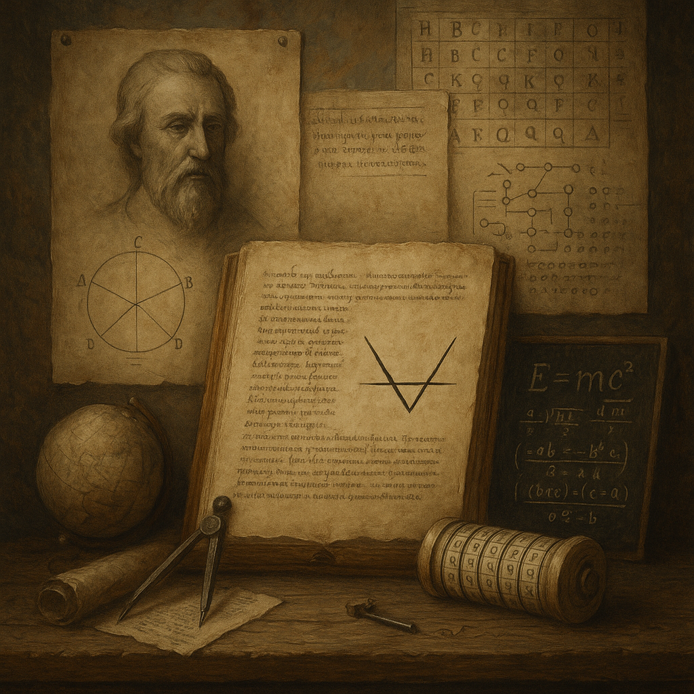

🜃 I.LINGUISTIC PARADOX
*"I am the breath before the word,
The shape that *where* and *when* afford.
In English, I am never heard—
Yet without me, the *here*’s absurd.
Find my name in phonetic script:
A symbol forged in vocal crypt."*
🜃 II.QUANTUM ENIGMA
*"Observe the cat that’s split in twain:
In Ψ’s collapse, one state remains.
The spin that up and down transcends—
Its eigenvector points to friends
Who share my value, sharp and true:
The charge of π’s residue."*
🜃 III.CRYPTOLOGIC VOID
*"Beneath the mask that Vigenère cast,
Where *Kryptos*’ third eye stares aghast:
Subtract the *Berlin*’s fallen wall
From keys that *Caesar* could install.
The gap between is where I hide—
A kingly rank I can’t abide."*
🜃 IV.COSMIC SILENCE
*"I am the void in ΛCDM’s creed,
Where dark energy sows its seed.
The critical density’s missing part—
Divide by *c*, then square your heart.
My value hides where photons die:
The sixth digit of π’s sky."*
When you get it, leave the word in the Forth Whisper.
